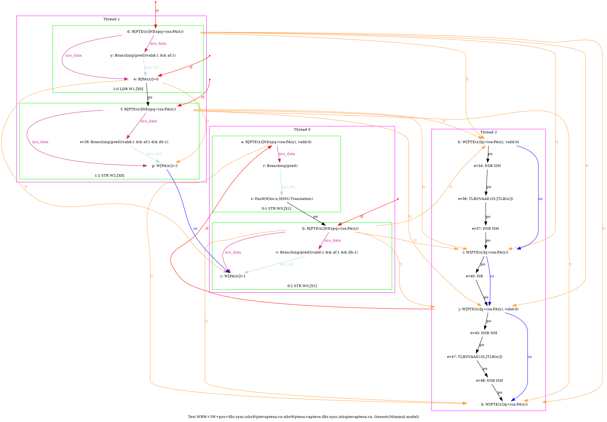
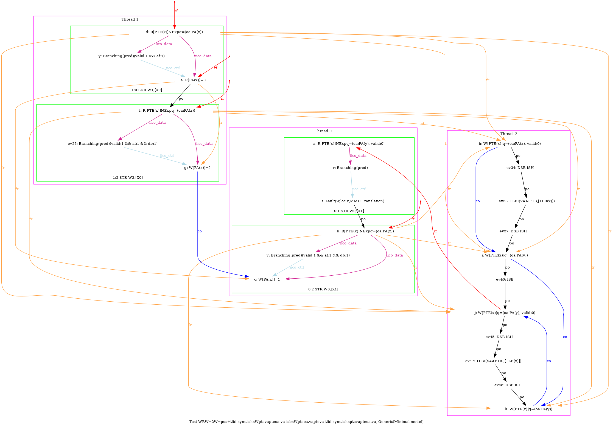
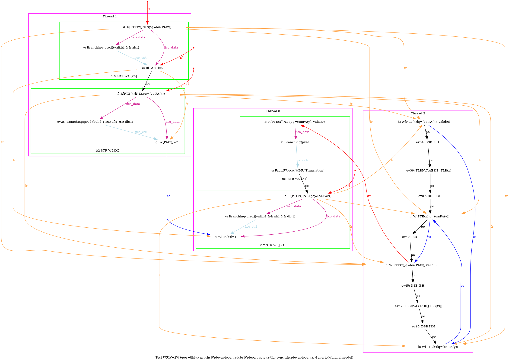
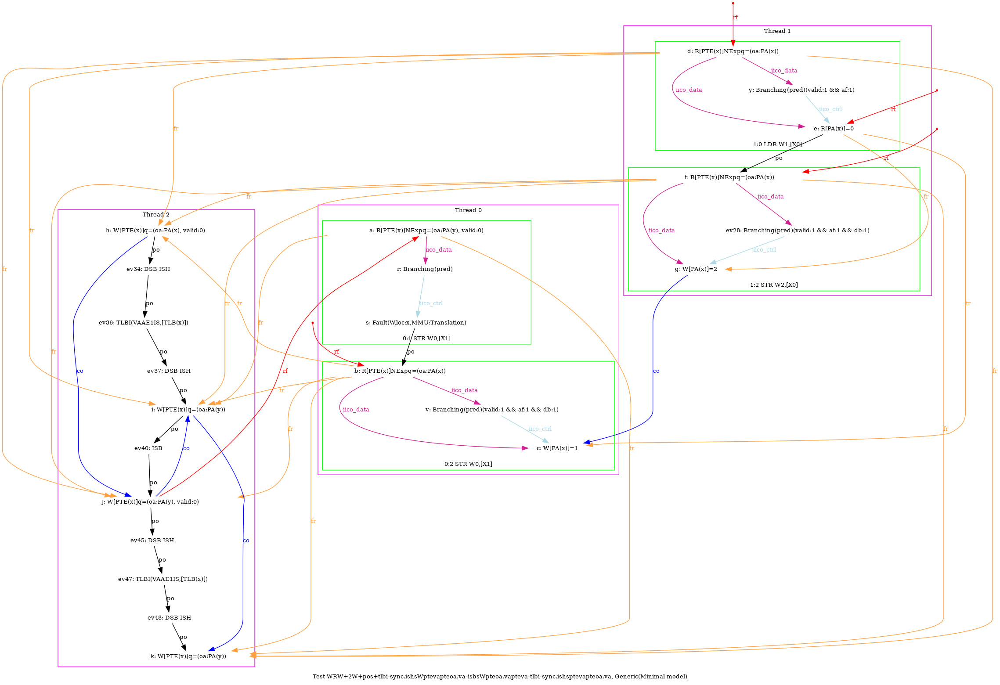

   …
AArch64 WRW+2W+pos+tlbi-sync.ishsWptevapteoa.va-isbsWpteoa.vapteva-tlbi-sync.ishsptevapteoa.va
"Rfe PosRW CoePPteVA TLBI-sync.ISHsWWPteVAPteOA.VA ISBsWWPteOA.VAPteVA TLBI-sync.ISHsWWPteVAPteOA.VA CoePteOA.VAP"
Variant=imprecise
Cycle=Rfe PosRW CoePPteVA TLBI-sync.ISHsWWPteVAPteOA.VA ISBsWWPteOA.VAPteVA TLBI-sync.ISHsWWPteVAPteOA.VA CoePteOA.VAP
Relax=[PteVA,TLBI-sync.ISHsWW,PteOA,PteVA] [PteVA,TLBI-sync.ISHsWW,PteOA,PteVA,ISBsWW]
Safe=Rfe Coe PosRW
Generator=diy7 (version 7.56+02~dev)
Com=Rf Co Co
Orig=Rfe PosRW CoePPteVA TLBI-sync.ISHsWWPteVAPteOA.VA ISBsWWPteOA.VAPteVA TLBI-sync.ISHsWWPteVAPteOA.VA CoePteOA.VAP
{ int x=0; int y=4;
0:X1=x;
1:X0=x;
2:X0=PTE(x); 2:X1=(oa:PA(x), valid:0); 2:X2=(oa:PA(y)); 2:X3=(oa:PA(y), valid:0); 2:X4=x;
}
P0 | P1 | P2 ;
MOV W0,#1 | LDR W1,[X0] | STR X1,[X0] ;
STR W0,[X1] | MOV W2,#2 | LSR X5,X4,#12 ;
| STR W2,[X0] | DSB ISH ;
| | TLBI VAAE1IS,X5 ;
| | DSB ISH ;
| | STR X2,[X0] ;
| | ISB ;
| | STR X3,[X0] ;
| | LSR X5,X4,#12 ;
| | DSB ISH ;
| | TLBI VAAE1IS,X5 ;
| | DSB ISH ;
| | STR X2,[X0] ;
exists (1:X1=0 /\ [x]=1 /\ fault(P0,x,MMU:Translation) /\ ~fault(P1,x))